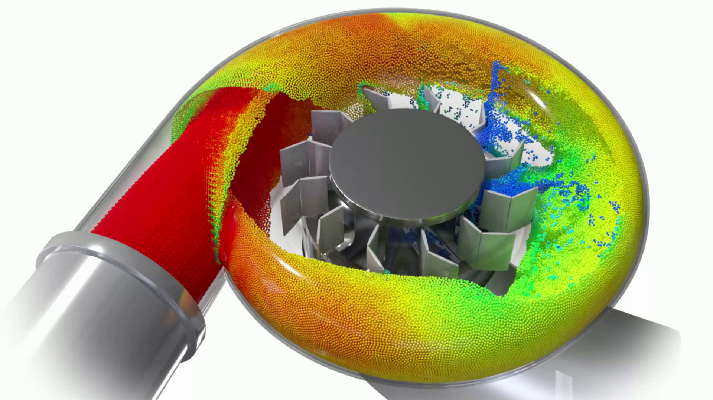
面向复杂运动边界的粒子流体半解析能量模型
将流体 bulk energy 与边界 contact energy 统一到一个变分框架中，让水轮机、齿轮泵和车辆涉水等场景中的流体不再轻易“穿墙”。
在粒子流体仿真中，边界处理看似只是一个简单的问题：不让水穿过墙。
但当边界不再是静止平面，而是高速运动、带有尖锐特征、狭窄间隙和复杂三角网格的固体结构时，这个问题会迅速变得困难。流体粒子不仅要保持自身的不可压缩性，还要在每一个时间步内稳定地响应边界运动、局部压缩和多接触作用。一旦处理不当，粒子就可能穿入固体、从缝隙中泄漏，或者在近壁区域出现明显的不稳定。
这三类现象对应复杂运动边界下最常见的失败入口：先出现穿透、漏液或局部体积损失，随后才需要从初值、近壁 bulk 和深穿透恢复三个层面系统修复。
围绕这一问题，我们提出了一种面向复杂运动边界的粒子流体半解析能量模型。该方法将流体的 bulk energy 与边界的 contact energy 统一到同一个变分框架中，并结合 reduced-order CCD 与 Hessian-free 的半隐式求解器，使粒子流体在水轮机、齿轮泵、车辆涉水等复杂运动边界场景中保持稳定。
为什么复杂运动边界是粒子流体的“压力测试”？
SPH 等粒子方法常用于自由表面流体、大变形和多物理耦合场景。相比网格方法，粒子方法的表达非常直观：粒子携带质量、速度、密度等物理量，并随流体一起运动。因此，它很适合表现水花、飞溅、灌注以及大范围流体运动。
然而，粒子方法在边界附近天然会遇到一个问题：粒子的核函数支持域会被固体截断。靠近墙面时，支持域的一部分落入固体内部，而那里并没有真实流体粒子参与计算。这样一来，密度、体积或 bulk energy 的估计就可能偏低。直观地说，流体在最需要保持不可压缩性的墙面附近，反而可能被算得“太软”。
如果边界是静止的，这个问题已经需要专门处理；如果边界开始运动，困难会进一步放大。复杂运动边界通常同时包含以下几类挑战：
- 尖锐特征：局部几何方向快速变化，接触响应更敏感；
- 狭窄间隙：少量位置误差就可能造成漏液或穿透；
- 强压缩：运动边界会不断把粒子推向固体内部；
- 多接触运动：一个粒子可能同时受到多个边界片元影响。
因此，复杂运动边界不是普通边界处理的简单扩展，而是对粒子流体边界模型、碰撞检测和非线性求解器的综合压力测试。

穿透不是一个孤立 bug，而是一条失败链
在复杂运动边界下，流体穿透通常不是由某一个单独环节造成的。它更像一条连续的失败链：初始状态可能已经不安全，近壁物理量又被低估，最后一旦粒子进入固体内部，普通边界修正很难再把它稳定拉回。
2.1 时间步预测可能已经给出坏初值
在大时间步或高速边界运动下，粒子的预测位置可能在进入非线性求解之前就已经跨过边界。此时，求解器面对的不是“如何避免粒子接触墙面”，而是“如何从已经穿透的状态中恢复”。
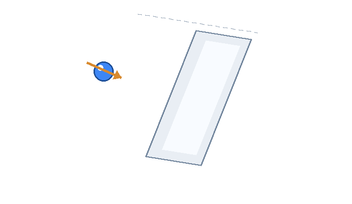
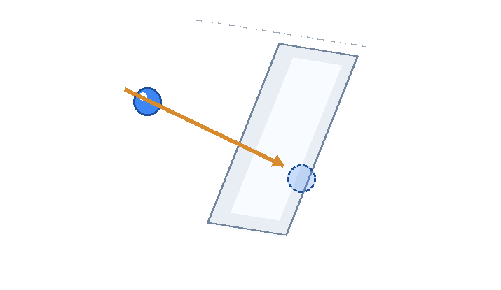
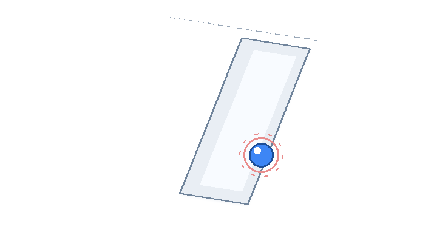
图 2：时间步预测可能让粒子在求解开始前已进入固体，后续求解必须从坏初值中恢复。
2.2 近壁 bulk energy 容易被低估
第二个问题来自粒子方法本身的近壁估计误差。由于边界截断了核函数支持域，墙面一侧缺少粒子贡献。如果仍然只根据流体粒子计算 bulk energy，近壁区域的不可压缩性响应就会变弱。
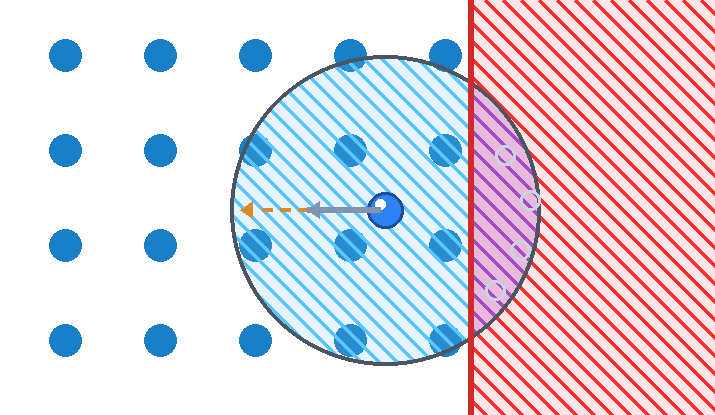
2.3 深穿透需要在墙内仍然有效的接触项
当粒子已经进入固体内部，问题就进入第三阶段。此时，单纯修正近壁 bulk energy 并不一定能保证粒子回到边界外侧。方法还需要一个接触势：即使 signed distance 已经为负，它仍然能够给出有效的恢复方向。
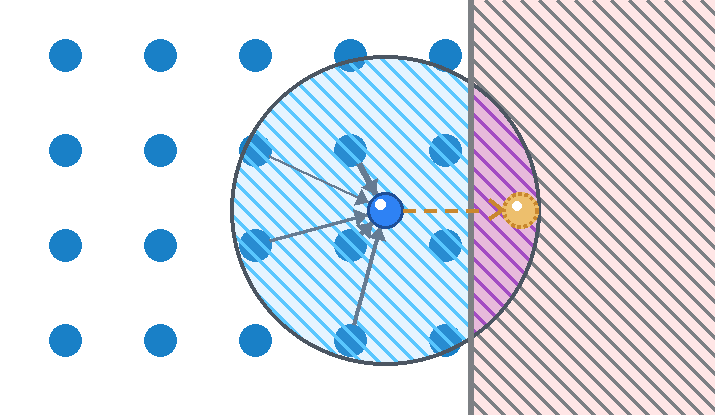
| 失败阶段 | 现象 | 后果 | 对应修复 |
|---|---|---|---|
| 坏初值 | 预测后粒子已进入固体 | 求解器从不安全状态开始 | RCCD |
| 近壁 bulk 低估 | 墙面一侧贡献缺失 | 边界附近过软 | SABE |
| 深穿透 | signed distance 已为负 | 普通正距离 barrier 难以恢复 | NCP |
方法概览：按失败链出现的顺序逐层修复
基于上述分析，本文方法将复杂运动边界下的边界处理拆成三个对应环节：使用 reduced-order CCD 处理时间步开始时可能出现的坏初值；使用 semi-analytical bulk energy 修正近壁 bulk energy 的低估；使用 nonlocal contact potential 处理已经发生的深穿透。
坏初值 → RCCD
先拦截时间步预测造成的跨界初值。
近壁偏软 → SABE
补回被边界截断的墙侧 bulk 贡献。
深穿透 → NCP
在 signed distance 为负时仍提供恢复方向。
Reduced-order CCD：先给求解器一个更安全的起点
连续碰撞检测常用于防止物体之间发生穿透。但对于粒子流体与复杂三角网格边界的交互，如果在每一次迭代中都执行完整 CCD，计算代价会很高；如果完全依赖后续边界力或位置修正，又可能无法处理大时间步下已经发生的初始穿透。
本文采用 reduced-order CCD。它在每个时间步开始时执行一次，先检测粒子轨迹是否与三角形所在平面发生相交，再判断相交点是否落在三角形内部。这样一来，原本复杂的粒子-三角形连续检测可以被简化为更轻量的求解过程。
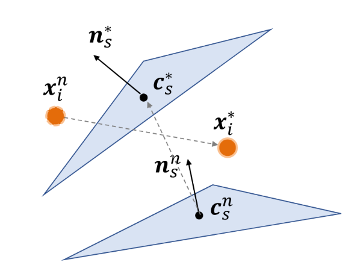
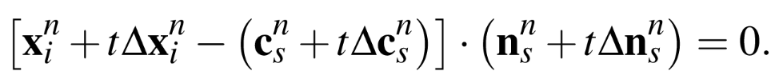
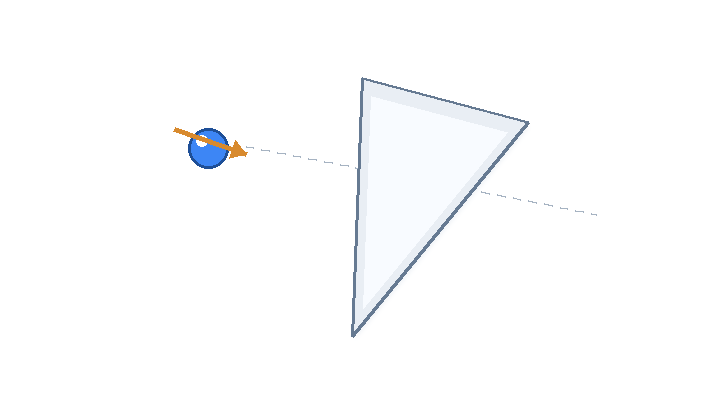
| 方法 | 运行时间 | 平均 TOI 偏差 | miss rate |
|---|---|---|---|
| RCCD | 4.51 μs | 7.86 × 10⁻⁹ | 0.00% |
| TightCCD | 2.47 μs | 3.70 × 10⁻⁸ | 66.66% |
| FullCCD | 117.74 μs | 2.85 × 10⁻⁸ | 0.00% |
Semi-analytical bulk energy：补回墙面一侧缺失的贡献
粒子靠近边界时，支持域被固体截断，导致墙面一侧的体积贡献缺失。传统做法可以通过 ghost particles 在固体内部补采样，但这会带来额外采样成本，并且在尖锐、复杂或运动边界上维护起来并不容易。
半解析边界思想则是直接利用边界几何信息来计算缺失贡献。本文进一步将这一思想写入 bulk energy 中：对于与粒子支持域相交的边界三角形，方法通过半解析形式估计边界一侧对 bulk energy 的贡献，从而修正近壁不可压缩性响应。
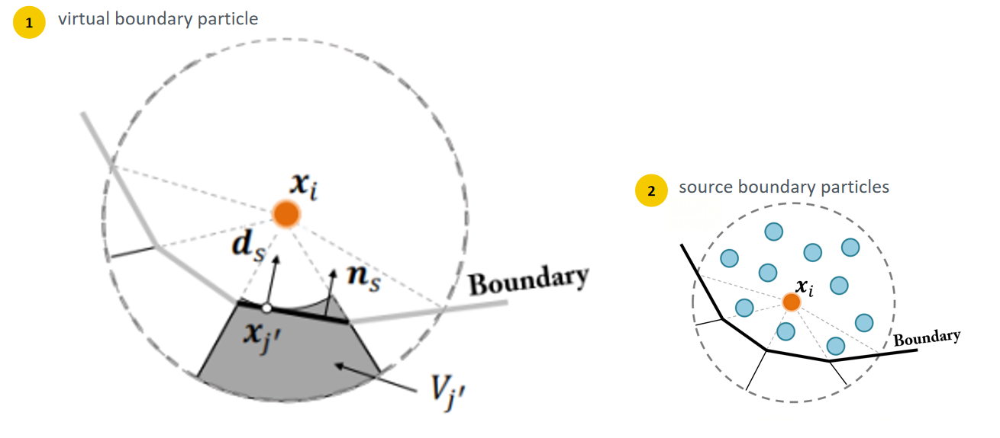
Nonlocal contact potential：让接触项在墙内也能工作
仅仅修正 bulk energy 还不足以处理所有情况。对于强压缩和复杂运动边界，粒子可能已经进入固体内部。此时，如果接触势只在正距离区域有效，就很难描述“从墙内恢复到墙外”的过程。
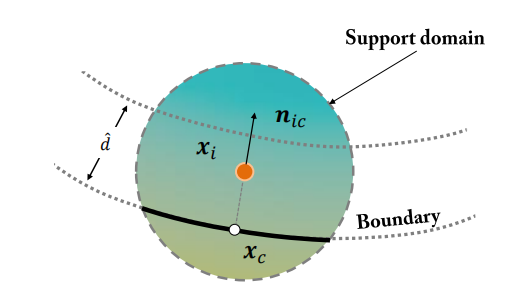
当粒子在墙外时，signed distance 为正；当粒子位于边界上时，signed distance 为零；当粒子进入固体内部时，signed distance 为负。本文的关键设计在于：接触势并不要求距离始终为正，而是允许在负 signed distance 区域继续产生恢复作用。
因此，即使粒子已经发生深穿透，contact potential 仍然能够提供把粒子推出固体的方向。相比只在边界外侧生效的 barrier，这种设计更适合处理复杂运动边界下不可避免的中间穿透状态。
6.1 接触能不是固定不变的，而是随状态自适应
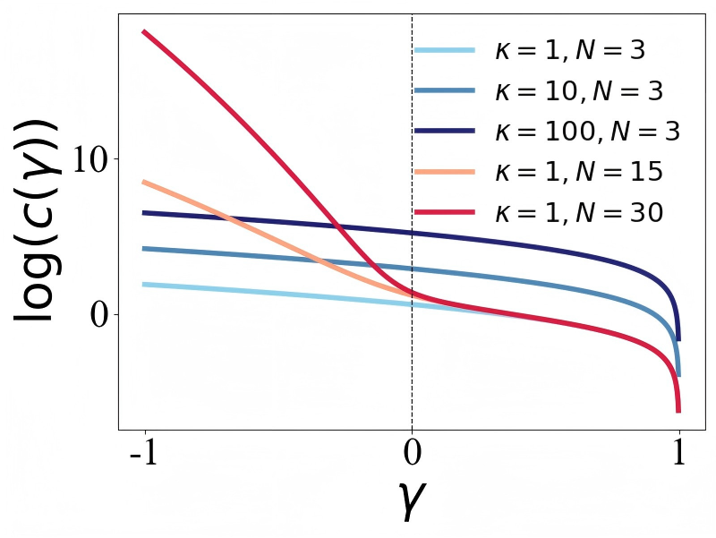
为了同时处理墙内恢复和墙外安全间隙，本文没有使用一组固定的 contact energy 参数。方法会根据 signed distance ratio γ 的符号自适应调整接触势：初始化时取 κ = μ、N = 3；当 γ < 0，说明粒子已经进入墙内，此时提高多项式阶数 N，让接触能在 inside-wall 区域产生更强的恢复作用；当 γ > 0，说明粒子仍处在墙外近邻带，此时提高 κ，用更强的接触刚度维持安全边界间隙。
也就是说，接触能的作用不是按固定时间表变化，而是按粒子当前状态变化：墙内强调“推出来”，墙外强调“留出间隙”。这也是 NCP 能够同时应对深穿透恢复和普通近壁接触的关键。
统一求解：把流体和边界放进同一个变分循环
上述三个模块最终被组合进统一的能量框架。对应到论文中的控制方程，求解器并不是先单独修正密度、再单独处理碰撞，而是把动量项、semi-analytical bulk energy 和 nonlocal contact potential 同时写进一个目标函数。这样，流体自身的不可压缩性、边界附近的缺失贡献以及粒子与运动边界之间的接触恢复，都可以在同一个优化问题中处理。本文采用 semi-implicit successive substitution method (SISSM) 进行求解。它避免显式构造 Hessian，也不需要求解全局线性系统，而是依赖局部核函数评估和系数分解，因此更适合 GPU 并行实现。
7.1 统一目标函数：三类能量放在同一个式子里
第一项是质量加权的惯性项，让当前位置不要偏离预测位置太多；第二项是 bulk energy，用修正后的密度比维持流体不可压缩性；第三项是 contact potential，用归一化距离比描述粒子与运动边界之间的接触状态。
7.2 接触能的约分形式：把墙内状态也写成稳定系数
论文中接触势使用关于归一化距离比的多项式 barrier。它与 IPC 的 barrier 形式相呼应，但允许距离比为负，因此粒子已经进入墙内时，公式仍然可用。
进一步把 signed distance 与虚拟接触点的关系代入接触力，论文将接触项整理成一个正负系数明确的形式：
这里的法向信息来自边界。虽然推导过程中会出现距离或归一化距离比作为分母，但论文指出分子中相应因子会发生约分；因此在粒子接近边界或已经进入墙内时，接触项仍能保持连续、符号一致，并满足 SISSM 的正负系数分解要求。
7.3 从能量到 SISSM 更新：完整推导流程
- 对统一目标函数取一阶驻点。 对每个粒子求导后，可以把更新写成“预测位置减去 bulk force 与 contact force”的固定点形式。
- contact force 和 bulk force 的拆分过程。 把 contact potential 代入 signed distance、contact thickness 和虚拟接触点，得到沿接触方向作用的非局部项，并进一步拆成法向恢复项和指向虚拟接触点的位移项：
公式 4：contact force 的非局部形式及其正负导数拆分。 \[ \begin{gathered} \mathbf{f}^{\mathcal{B}}(\mathbf{x}_i)=\mu\frac{h^2}{\rho_0}\dot B(\lambda_i)\left(\sum_j\dot W_{ij}\frac{\mathbf{x}_j-\mathbf{x}_i}{r_{ij}}+\sum_{j'}\eta_{j'}\dot W_{ij'}\frac{\mathbf{x}_{j'}-\mathbf{x}_i}{r_{ij'}}\right)\\[4pt] \mathbf{f}^{\mathcal{B}}(\mathbf{x}_i)=\sum_j(A_{ij}^{+}+A_{ij}^{-})(\mathbf{x}_j-\mathbf{x}_i)+\sum_{j'}(A_{ij'}^{+}+A_{ij'}^{-})(\mathbf{x}_{j'}-\mathbf{x}_i)\\[4pt] A_{ij}^{+}=\mu\frac{h^2}{\rho_0}\dot B^{-}(\lambda_i)\frac{\dot W_{ij}}{r_{ij}},\qquad A_{ij}^{-}=\mu\frac{h^2}{\rho_0}\dot B^{+}(\lambda_i)\frac{\dot W_{ij}}{r_{ij}}\\[4pt] A_{ij'}^{+}=\mu\frac{h^2}{\rho_0}\eta_{j'}\dot B^{-}(\lambda_i)\frac{\dot W_{ij'}}{r_{ij'}},\qquad A_{ij'}^{-}=\mu\frac{h^2}{\rho_0}\eta_{j'}\dot B^{+}(\lambda_i)\frac{\dot W_{ij'}}{r_{ij'}}\\[4pt] \dot B(\lambda_i)=\dot B^{+}(\lambda_i)+\dot B^{-}(\lambda_i),\qquad \dot B^{+}\geq0,\quad \dot B^{-}\leq0 \end{gathered} \]公式 5：bulk force 的正负系数拆分；A+ 为非负隐式系数，A− 为非正显式系数。 - 组装最终的 A+ / A− 固定点结果。 有了上一步的拆分后，把真实流体邻居、虚拟边界粒子和虚拟接触粒子统一放回固定点式：
公式 6：将 bulk 与 contact 的 A+ / A− 系数组装到同一个固定点式中。 - 得到 Hessian-free 的 SISSM 更新。 对第 k 次迭代，正系数进入分母和隐式项，负系数使用上一轮位置显式计算。
- 最后用 line-search filter 防止过冲。 SISSM 先给出候选位置，再用步长过滤沿当前迭代方向推进，使能量在迭代过程中保持下降趋势。
\[ \begin{gathered} \mathbf{x}_{i}\leftarrow\mathbf{x}_{i}^{k}+\alpha_i^k(\mathbf{x}_i^{k+1}-\mathbf{x}_i^k)\\[4pt] \alpha_i^k\in[0,1] \end{gathered} \]
实验验证：复杂运动场景下的稳定性
为了验证方法的有效性，论文从多个层面进行了实验：首先验证 reduced-order CCD 的检测稳定性，然后分析边界特征捕捉能力，最后在多个复杂运动边界场景中与已有方法进行对比。
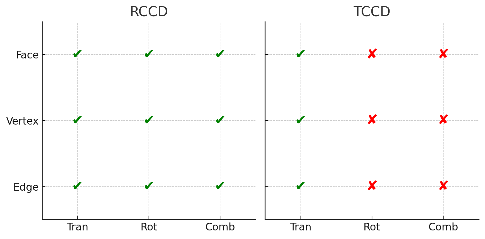
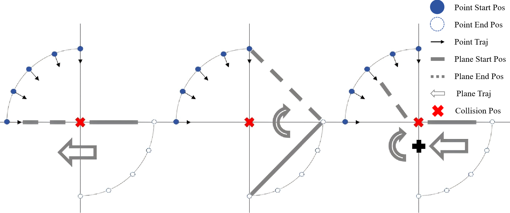
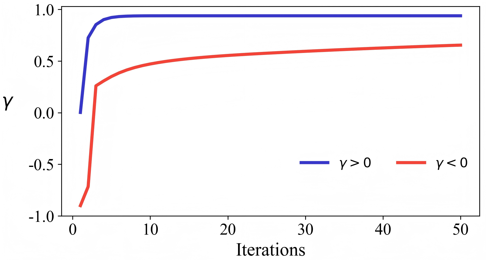
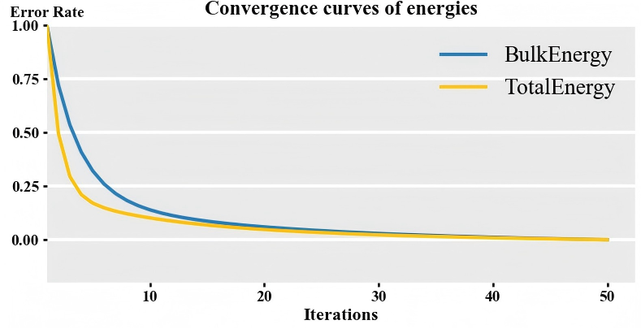
图 11：四个独立证据元素分别对应 RCCD 检测、边界细节、墙内恢复和能量收敛。
在边界特征实验中，结果表明粒子半径、边界特征尺寸和 contact thickness 会共同影响几何细节表现。合适的参数可以在稳定性和边界细节之间取得平衡。
在复杂运动场景中，方法展示了更强的鲁棒性。例如，在旋转圆锥、双转子泵、多齿轮装配、车辆涉水和水轮机场景中，已有方法可能出现漏液、穿透或不稳定，而本文方法能够在强压缩和多接触条件下保持较好的边界响应。
完整对比视频进一步同时展示已有方法的失效和本文方法的稳定结果。
| 场景 | 主要挑战 | 观察结果 |
|---|---|---|
| RCCD 测试 | 旋转与组合运动下的连续碰撞检测 | RCCD 保持 0% miss rate，开销远低于 FullCCD |
| 边界特征捕捉 | 粒子尺寸、特征尺寸、接触厚度共同影响细节 | 合理参数下能够稳定捕捉复杂边界结构 |
| 双转子泵 | 强压缩、封闭腔体、快速运动边界 | 方法保持稳定，减少穿透 |
| 多齿轮装配 | 尖锐齿形、窄缝、多接触 | 方法能处理复杂三角网格运动边界 |
| 车辆涉水 / 水轮机 | 大规模粒子与复杂边界耦合 | 方法在视觉和稳定性上表现良好 |
总结
复杂运动边界下的粒子穿透，并不是一个孤立的碰撞检测 bug。它往往从大时间步预测造成的坏初值开始，经过近壁 bulk energy 低估进一步放大，最后发展为需要接触势恢复的深穿透问题。
本文的核心思想，就是按照这条失败链出现的顺序逐层修复：reduced-order CCD 让求解器从更安全的初始状态开始；semi-analytical bulk energy 修正边界附近的 bulk energy 低估；nonlocal contact potential 让粒子即使进入墙内也能获得有效恢复；统一的 Hessian-free 求解器把流体和边界交互放在同一个变分循环中处理。
最后，当前方法仍然有继续扩展的空间。例如，reduced-order CCD 本身仍是近似检测；当边界元素非常小或运动极端剧烈时，signed distance 评估可能更加敏感；当前框架主要面向一向耦合，未来可以进一步扩展到更一般的双向流固耦合场景。
把穿透放回完整失败链中处理
只有同时修正初始状态、近壁 bulk 估计和深穿透恢复，复杂边界下的粒子流体才能真正稳定起来。
团队、源代码与主要参考文献
团队介绍
本文工作由中国科学院大学应急管理科学与工程学院与中国科学院软件研究所相关研究团队合作完成。
本公众号“实时仿真与智能”将持续介绍课题组在物理仿真与人工智能交叉方向的研究进展，包括粒子流体、可变形体、近场动力学、实时求解器、仿真系统以及 PeriDyno 相关开源实践。
论文入口
- DOI：10.1111/cgf.70333
- 期刊：Computer Graphics Forum / Eurographics 2026
- 文章编号：e70333
源代码
相关实现将围绕开源物理仿真平台 PeriDyno 进行整理与发布。PeriDyno 是一个基于 CUDA 的高并行物理仿真平台，面向智能体物理环境的实时仿真需求。
- GitHub 仓库：https://github.com/peridyno/peridyno
- 克隆方式：
git clone --recursive https://github.com/peridyno/peridyno.git - 项目文档：https://www.peridyno.com
主要参考文献
- Liu et al. A Semi-Analytical Energy Model for Particle-Based Fluid Simulation Involving Complex Moving Boundaries. Computer Graphics Forum / Eurographics 2026, e70333. DOI: 10.1111/cgf.70333.
- Chang, Y., Liu, S., He, X., Li, S., Wang, G. Semi-analytical Solid Boundary Conditions for Free Surface Flows. Computer Graphics Forum, 2020.
- Winchenbach, R., Akhunov, R., Kolb, A. Semi-Analytic Boundary Handling Below Particle Resolution for Smoothed Particle Hydrodynamics. ACM Transactions on Graphics, 2020.
- He, X., Liu, S., Guo, Y., Shi, J., Qiao, Y. A Semi-Implicit SPH Method for Compressible and Incompressible Flows with Improved Convergence. Computer Graphics Forum, 2025.
- Lu, Z., He, X., Guo, Y., Liu, X., Wang, H. Projective Peridynamic Modeling of Hyperelastic Membranes With Contact. IEEE Transactions on Visualization and Computer Graphics, 2023.
- Li, M. et al. Incremental Potential Contact. ACM Transactions on Graphics, 2020.
- Koschier, D., Bender, J., Solenthaler, B., Teschner, M. A Survey on SPH Methods in Computer Graphics. Computer Graphics Forum, 2022.
- Macklin, M., Müller, M. Position Based Fluids. ACM Transactions on Graphics, 2013.